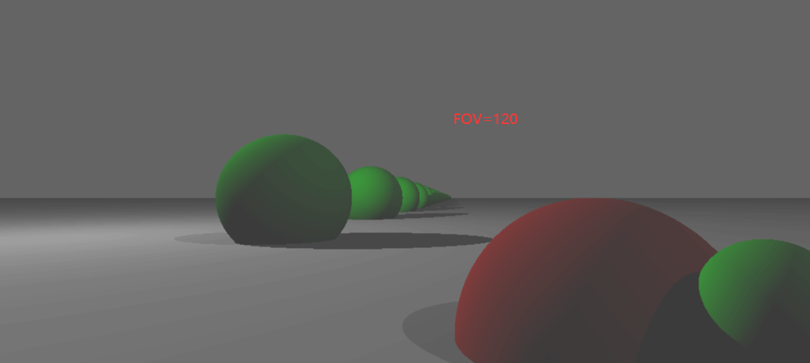
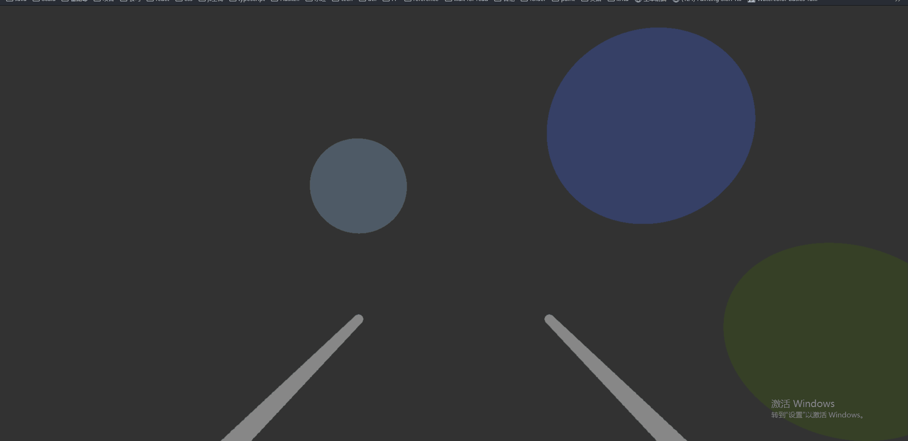
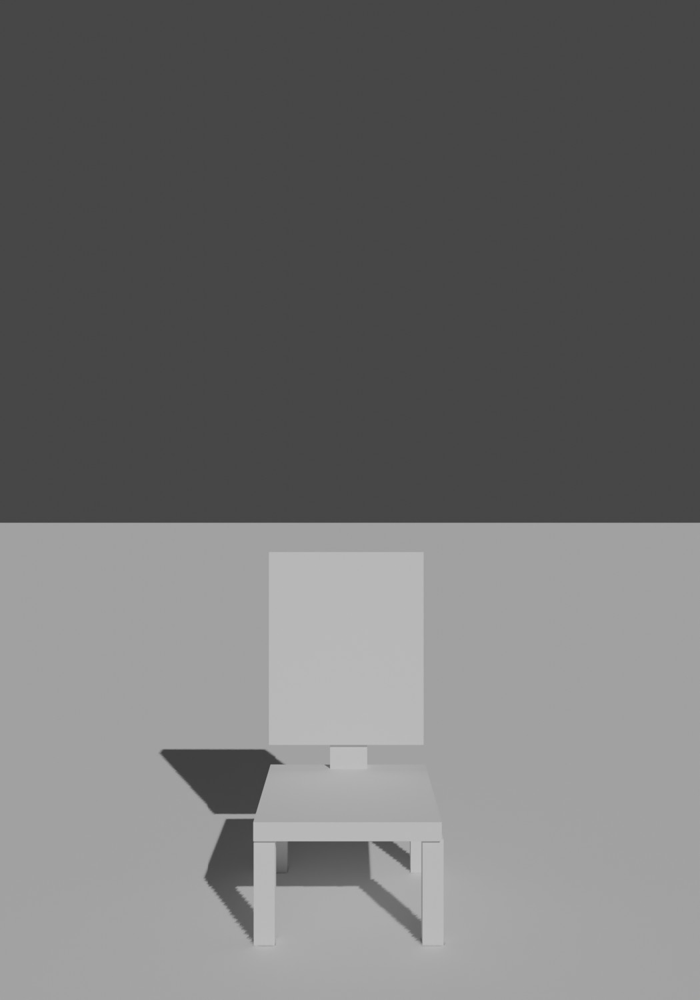
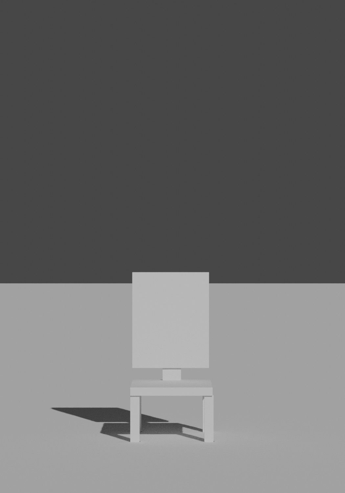
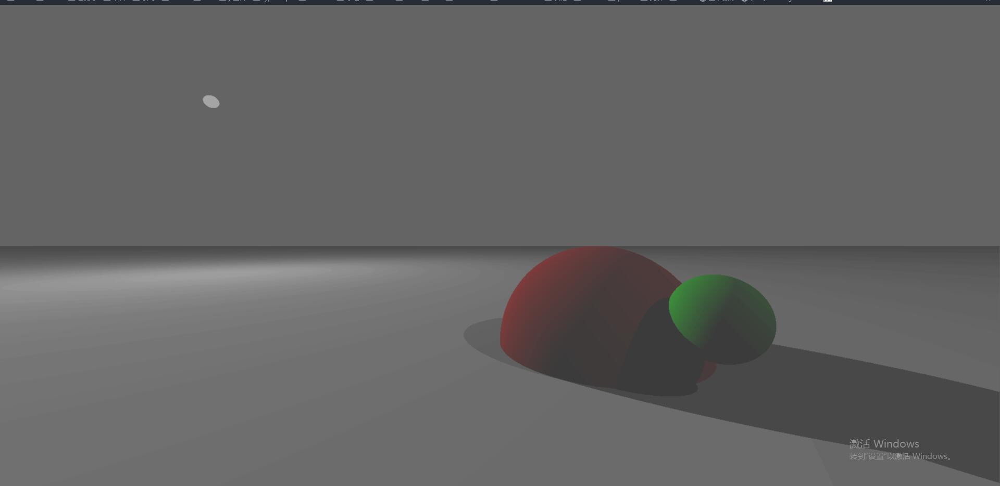

《Computer Graphics from Scratch》学习笔记——光线追踪器

为了更好地绘画，为了能扩宽职业方向（技术美术），学点计算机图形学是很必要的。
想要在屏幕中展示 3d 图形，归根结底有两种方式：光栅化和光线追踪，这里跟随此书步调，从光线追踪技术开始计算机图形学的学习。下面的描述中，均使用左手坐标系（大拇指指向自己，食指指向上方，此时大拇指，食指，中指分别为 x，y，z），并且镜头位置固定在(0, 0, 0)，且指向 z 轴正方向，上方为 y 轴正方向（关于任意位置和角度的镜头的算法，待学习光栅化时再学习）。
从 canvas 到 viewport
首先是 canvas 和 viewport 的概念，为什么同时需要 canvas 和 viewport 这两个抽象？因为 canvas 对应显示屏或应用的窗口，它的单位是像素，是离散的，viewport 是 3d 坐标系下的一个面（或许不是平面），它的单位是真实世界单位比如米，它是连续的，考虑到 viewport 和 canvas 的量纲的差别，他们的比例也可以有不同，viewport 甚至可以不是平面…将它们做区分是有理由的。
算法的第一步是根据 canvas 的像素去找到 viewport 的对应位置（为什么不是从 viewport 开始？因为 viewport 是连续的，而且可能会有多个 viewport 上的点会对应到 canvas 上同一个像素，这时候如何确认这个像素使用哪个点？），考虑到当前的 canvas 和 viewport 均是矩形，做映射是容易的，下面是各变量及意义，及相关映射的方程：
1 | |
直线的表示法
直到绘制像素点之前，后面的步骤不再需要使用 canvas 了。第二步需要做相机到该位置的射线（这和实际光线的运动方式是相反的，但实现起来更容易），这需要对射线建模，假设相机位置为 O，viewport 上的点为 V，则从 O 到 V 的向量为 V-O，直线上任何一点 P 可以表示为：
1 | |
在这里，V-O 的大小显然是可以任意放缩的，这里令 V-O=D，则有：
1 | |
检查直线和球体相交
第三步是检查射线是否和球体相交，方法如下：
假设球的球心为 C，半径为 r，则球上任意一点 P 满足：
1 | |
即：
1 | |
即：
1 | |
这里要求 P 也在射线上，带入 P = O + tD，同时令 O - C = CO：
1 | |
点乘满足分配律，即 (a + b, c) = ac + bc，应用此，得到：
1 | |
再次应用，得到：
1 | |
点乘满足交换律，即 (a, b) = (b, a)，且满足 (ta, b) = t(a, b) = (a, tb)，带入得到：
1 | |
可以看到，这是一个一元二次方程，且 D，CO，r 均已知，可以据此求出结果方程：
1 | |
能够意识到，只消允许 O 为任意点，可以求出任意射线和任意球体的交线。
可以发现这里使用的完全是向量，没有将它解构成坐标。代码实现如下，这里返回 t 而非具体的交点，因为 t 可以用来判断点是在 viewport 前还是在 viewport 后：
1 | |
渲染
剩下的逻辑就简单了，做射线后，找到和每个球的交点，找到最近的且在 viewport 外的交点，找到对应的球，渲染它的颜色，总的实现使用伪代码表示就是：
1 | |
最后的效果就像一张二维图片，因为这个世界没有光（更实际地说，是只有白色的泛光），因此物体只有固有色，没有立体感，下一步是定义光源的概念，对每一个位置，将物体的固有色乘以此处光源强度得到此处颜色。

注意处在画面边缘的球体的畸变，这个非常有意思。
透视
物体在画面中所占的大小，就是物体向镜头方向在 viewport 上的投影的大小。这种抽象可以自动地表达平放的六面体的一点，二点透视；三点透视需要能够修改镜头的俯仰角。
首先是一点透视，六面体若有一个面平行于 viewport，则它是一点透视的，它的特性是如果这个六面体在平行于 viewport 的这个面上竖直方向移动，则水平方向的线的长度是固定的，竖直方向会有透视；水平方向移动则反之。这是很不符合直觉的，甚至如果是球体，则竖直移动时，竖直方向会变得更长，最后简直像纺锤形了，但可以通过平面作图证明这一点。
二点透视发生在六面体没有面平行于 viewport，但有线平行于 viewport，后面不表了。
四点，五点透视需要 viewport 非平面。
焦距，视场角
FOV，视场角，它是水平方向的视野范围，单位是度，可以使用 FOV 和 D（viewport 和镜头的距离）来计算 viewport 的长宽：
1 | |
FOV 和镜头的焦距成反比，短焦镜头的 FOV 大，能看到更多内容，空间变形幅度大，长焦镜头 FOV 小，看到内容更少，空间会有种压缩感，近大远小不明显，下面是 FOV 不同时的例子：


这点可以利用到画画中，只需要调整远离镜头的线的长度，便能够表现出不同的镜头感。


光
可以简单定义三种光源：点光（如灯泡），直射光（如太阳，镭射灯），环境光（天光，暗面的反射光），为了简单起见，光均是白光，因此只需要一个维度 i：intensity 表示亮度（色光用 3 个维度 rgb）；不考虑大气透视。
对场景中任意点为 P，光线到 P 点的向量 L（大小任意，因为没有大气透视），则对点光，光源为 Q，L = Q - P；对直射光，L 直接给定；反射光是光在其它物体上的反射所造成，为此，我们需要让每个物体都成为光源，这复杂过了头，对其的抽象则是所谓的环境光，它对每个点都施加同样的亮度，这又简化过了头（就像古早的 3d 游戏），但不是不能用。一个场景只能有一个环境光（不同环境光可以直接组合），可以有任意点光和直射光，任意点上的光量为所有光在该处光量的和（现实如此）。
光打到物体后，物体的反射光打到眼睛里，我们才能看到物体；物体反射光的能力书中将它们分为 matte 和 shiny，这里把他们称为调子和高光。任何物体都一定会既有调子也有高光，无论是石膏还是金属，只不过高光的程度各有差异罢了。
一般来说，对特定物体，光打到它后会均匀向各个方向反射，因此从各个角度看来，它的特定位置的亮度是一样的，不随人的视线方向为转移；这时候。特定位置的亮度就取决于光和物体表面的夹角了，垂直于光的部分亮度最高，夹角越小，单位面积就会接受越少的光，亮度就越小。
假设单位光强度为 I，光打到的面积为 A，则此时的单位面积上的光强度为 kI/A；规定当 I 垂直于点所在平面的时候，kI/A=1，问题就变成，光和点的法线呈一个角度 a 的时候，此时的 kI/A 的值是什么？只从二维来看，把 A 当成线段的长度的话，在某角度 a 下，kI/A = cos(a)，假设平面的法向量为 N，光向量为 L，根据点乘规律 (N, L) = |N||L|cos(a)，就可以求得 cos(a) 了。对某个点，我们只需要计算面在该点上的法向量，然后对每一个光源获取它在该点处的光强度，将所有结果加和即可，即下面的公式：
1 | |
上面当 (N, L0) 小于 0 的时候需要返回 0，此时为物体在光线的背部。
我不懂微积分，不知道这种推导过程是否正确，但最后效果不错就好。
需要注意的是，I 的上限是无限的，我们需要做好“曝光”，这里简单要求所有光源 intensity 的和极限为 1.0，然后对于某点的颜色，直接用总的 intensity 乘以球体的固有色 rgb 即可；这效果会非常土就是了……

阴影
上面的算法没有考虑阴影，但加入阴影也是简单的。只需要在计算某点来自特定光源的I的时候，检查该点和光源之间是否有其它物体存在即可。遍历物体时第一想法是把当前物体排除掉（不然会得到 t=0 的结果），这在只有球体的情况下还算可用，但无法处理复杂物体自己遮挡自己的情况（比如用手在眼睛上挡住太阳），考虑将出发点的位置从该点往外偏移一些，或者限制一下t的值。
高光
少女祈祷中……
反射
核心是递归操作——第一趟是做镜头到viewport上某点的射线，检查对所有物体的交点，第二趟就是从交点开始，按反射的方向去做射线，不断递归，直到什么物体都没打到，或者达到设计的反射次数的上限（一般3次就足够了）。
少女祈祷中……
本博客所有文章除特别声明外，均采用 CC BY-NC-SA 4.0 协议 ，转载请注明出处！